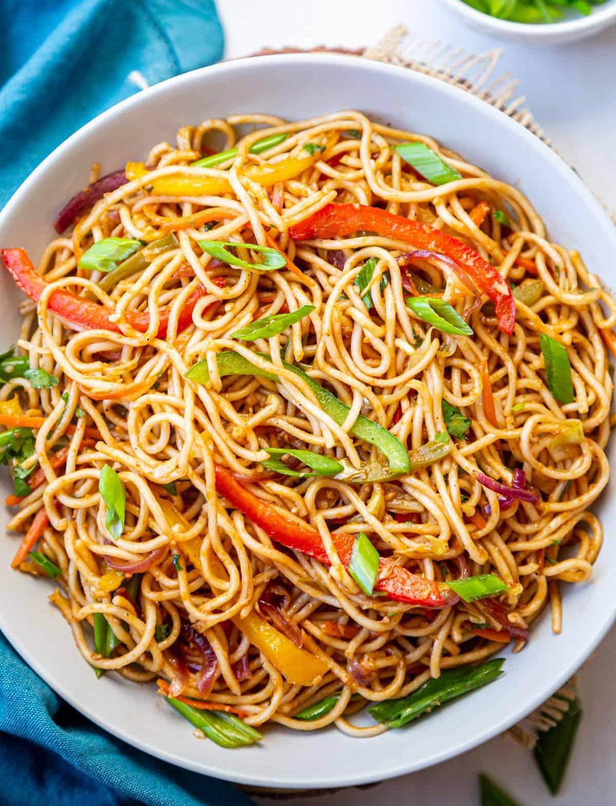

Veg Noodles
⭐⭐⭐⭐⭐ 4.8 Rating | ⏱ 30 Minutes | 🍽 4 Servings
Category
Lunch / Dinner
Difficulty
Easy
Calories
350 kcal
Cooking Style
Stir-Fried
📋 Ingredients
- 200 g Noodles
- 2 tbsp Oil
- 1 Onion (Sliced)
- 1 Carrot (Julienned)
- 1 Capsicum (Sliced)
- ½ Cup Cabbage (Shredded)
- ¼ Cup Green Beans (Sliced)
- 2 Green Chillies (Optional)
- 1 tbsp Ginger-Garlic Paste
- 1 tbsp Soy Sauce
- 1 tbsp Tomato Ketchup
- 1 tsp Chili Sauce
- ½ tsp Black Pepper Powder
- Salt to Taste
- Spring Onion for Garnishing
🍳 Required Utensils
- Large Cooking Pot
- Wok or Frying Pan
- Knife
- Cutting Board
- Strainer
- Spatula
- Serving Bowl
📖 Introduction
Veg Noodles is a popular Indo-Chinese dish prepared with boiled noodles, colorful vegetables, and flavorful sauces. It is quick to make and perfect for lunch, dinner, or evening snacks.
🔬 Principle
The noodles are boiled until tender and then stir-fried on high heat with fresh vegetables and sauces. High-heat cooking keeps the vegetables crisp while evenly coating the noodles with flavor.
👨🍳 Procedure
- Boil the noodles according to the package instructions.
- Drain the noodles and rinse with cold water.
- Add a little oil and toss to prevent sticking.
- Heat oil in a wok.
- Add ginger-garlic paste and sauté for one minute.
- Add onions and green chillies.
- Add carrots, beans, cabbage, and capsicum.
- Stir-fry the vegetables on high flame for 3–4 minutes.
- Add soy sauce, tomato ketchup, and chili sauce.
- Add black pepper and salt.
- Add the boiled noodles.
- Toss everything gently until well mixed.
- Garnish with chopped spring onions.
- Serve hot.
⚠ Precautions
- Do not overcook the noodles.
- Use high heat while stir-frying.
- Do not overcook the vegetables.
- Add sauces according to taste.
- Toss gently to avoid breaking the noodles.
💡 Chef Tips
- Add mushrooms or baby corn for extra flavor.
- Use sesame oil for authentic taste.
- Sprinkle chili flakes for extra spice.
- Add paneer or tofu for more protein.
- Serve immediately while hot.
🥗 Nutrition Facts
| Nutrient | Amount |
|---|---|
| Calories | 350 kcal |
| Protein | 9 g |
| Carbohydrates | 56 g |
| Fat | 10 g |
| Fiber | 5 g |
🍽 Serving Suggestions
- Serve with Manchurian.
- Enjoy with Tomato Ketchup.
- Pair with Chili Paneer.
- Serve with Spring Rolls.
- Garnish with Spring Onions.
🌿 Health Benefits
- Vegetables provide vitamins and minerals.
- Carrots are rich in Vitamin A.
- Cabbage contains dietary fiber.
- Homemade noodles contain fewer preservatives.
- Balanced meal when served with vegetables.
✅ Result
The prepared Veg Noodles should be soft yet firm, coated evenly with flavorful sauces, and mixed with colorful, crunchy vegetables. It should have a delicious aroma and be served hot for the best taste.
🎥 Watch Recipe Video
Learn the complete recipe by watching the step-by-step video.
▶ Watch on YouTube